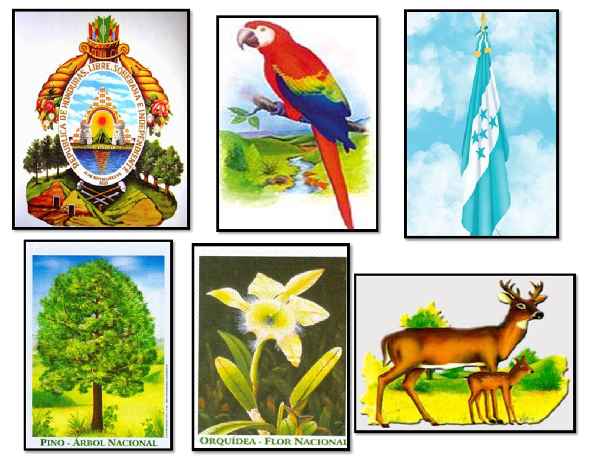

Introducción a los Símbolos Patrios
Los símbolos patrios de Honduras son emblemas que representan la identidad, la historia, la cultura y la riqueza natural de la nación. La adopción de estos símbolos es un acto de soberanía y un llamado a la unidad de todos los hondureños. Cada uno de ellos, desde la flor nacional hasta el árbol emblemático, encapsula una parte fundamental de lo que significa ser hondureño.

Importancia y Significado
Estos símbolos no solo tienen un valor estético, sino que también actúan como pilares de nuestra conciencia cívica y patriótica. Nos recuerdan la belleza de nuestra tierra, la tenacidad de nuestra fauna y flora, y la necesidad de proteger nuestro patrimonio natural. Respetarlos y honrarlos es un deber que fortalece nuestro sentido de pertenencia y amor a la patria.